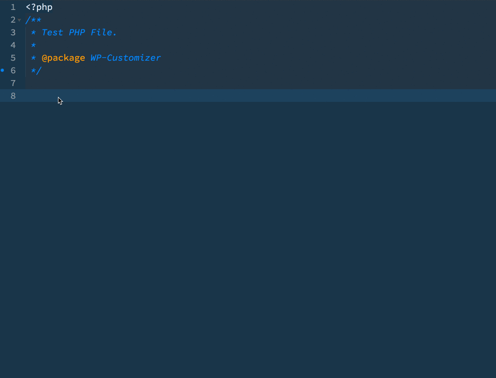

⚡️ Sublime WordPress Customizer Package¶
Since WordPress 3.4, the Theme Customization API has emerged as an important PHP and JavaScript based API in core. It introduced developers to a standardized way of adding theme options in the Customizer Panel of the WordPress Dashboard.
→ PROJECT MOTIVATION¶
While working on a project, we found that adding panels, sections, and control and setting options with the Customizer API is somewhat time-consuming — since they have so many similar options and it’s a tiring process of going back and forth with the official documentation. That's why we built this intuitive package of WordPress customizer snippets.
SOLUTION
We came up with a solution which helps you build Customizer options for your WordPress product (theme/plugin) under 5 minutes.
To save time, we’ve built a Sublime-WP-Customizer which is a Sublime Package of snippets for WordPress Customizer. It helps you add the following:
- Customizer Panels
- Customizer Sections
- Controls, and
- Settings
All of that with standard compliant code with tab triggered snippets.
→ SUBLIME-WP-CUSTOMIZER¶
We are a great advocate of Sublime Text and use it for both front-end and back-end programming. It has helped us automate our developmental workflow and build small completions and snippets based libraries.
ABOUT
Sublime-WP-Customizeris a set of simple, tab-triggered sublime snippets and completions for WordPress Customizer for your Sublime Text editor.- You can download it from here → Sublime Package Control.

→ Use WP Customizer!¶
This documentation guide helps you create WordPress Customizer Theme/Plugin Options with the Sublime-WP-Customizer Sublime Text Package. Adding any simple options in your plugin or theme that you are building is just a few snippets away. Let me know your thoughts on this.
SUPPORT
If you have any issues, make sure you report them on GitHub. Pull Requests are more than welcomed.
STATS
- We open sourced this package and more than 5,000 developers are already using it.
- WordPress Customizer Package for Sublime Text is now featured on the homepage of PacakgeControl.io as the 9th most trending package. Yay! ⓦ
- Sarah Gooding featured the package at WPTavern: Ahmad Awais Releases WordPress Customizer Package for Sublime Text Yay!
- WordPress Customizer Package for Sublime Text is the 2nd most relevant and 10th most popular Sublime package for WordPress.